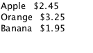
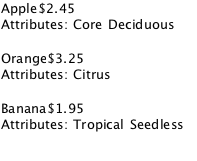

ListModel QML Type
Defines a free-form list data source. More...
| Import Statement: | import QtQml.Models |
Properties
- count : int
- dynamicRoles : bool
Methods
- append(jsobject dict)
- clear()
- object get(int index)
- insert(int index, jsobject dict)
- move(int from, int to, int n)
- remove(int index, int count)
- set(int index, jsobject dict)
- setProperty(int index, string property, variant value)
- sync()
Detailed Description
The ListModel is a simple container of ListElement definitions, each containing data roles. The contents can be defined dynamically, or explicitly in QML.
The number of elements in the model can be obtained from its count property. A number of familiar methods are also provided to manipulate the contents of the model, including append(), insert(), move(), remove() and set(). These methods accept dictionaries as their arguments; these are translated to ListElement objects by the model.
Elements can be manipulated via the model using the setProperty() method, which allows the roles of the specified element to be set and changed.
ListModel inherits from QAbstractListModel and provides its Q_INVOKABLE methods. You can, for example use QAbstractItemModel::index to retrieve a QModelIndex for a row and column.
Example Usage
The following example shows a ListModel containing three elements, with the roles "name" and "cost".

import QtQuick ListModel { id: fruitModel ListElement { name: "Apple" cost: 2.45 } ListElement { name: "Orange" cost: 3.25 } ListElement { name: "Banana" cost: 1.95 } }
Roles (properties) in each element must begin with a lower-case letter and should be common to all elements in a model. The ListElement documentation provides more guidelines for how elements should be defined.
Since the example model contains an id property, it can be referenced by views, such as the ListView in this example:
import QtQuick Rectangle { width: 200; height: 200 ListModel { id: fruitModel ... } Component { id: fruitDelegate Row { spacing: 10 Text { text: name } Text { text: '$' + cost } } } ListView { anchors.fill: parent model: fruitModel delegate: fruitDelegate } }
It is possible for roles to contain list data. In the following example we create a list of fruit attributes:
ListModel { id: fruitModel ListElement { name: "Apple" cost: 2.45 attributes: [ ListElement { description: "Core" }, ListElement { description: "Deciduous" } ] } ListElement { name: "Orange" cost: 3.25 attributes: [ ListElement { description: "Citrus" } ] } ListElement { name: "Banana" cost: 1.95 attributes: [ ListElement { description: "Tropical" }, ListElement { description: "Seedless" } ] } }
The delegate displays all the fruit attributes:

Component { id: fruitDelegate Item { width: 200; height: 50 Text { id: nameField; text: name } Text { text: '$' + cost; anchors.left: nameField.right } Row { anchors.top: nameField.bottom spacing: 5 Text { text: "Attributes:" } Repeater { model: attributes Text { text: description } } } } }
Modifying List Models
The content of a ListModel may be created and modified using the clear(), append(), set(), insert() and setProperty() methods. For example:
Component {
id: fruitDelegate
Item {
width: 200; height: 50
Text { text: name }
Text { text: '$' + cost; anchors.right: parent.right }
// Double the price when clicked.
MouseArea {
anchors.fill: parent
onClicked: fruitModel.setProperty(index, "cost", cost * 2)
}
}
}
Note that when creating content dynamically the set of available properties cannot be changed once set. Whatever properties are first added to the model are the only permitted properties in the model.
Using Threaded List Models with WorkerScript
ListModel can be used together with WorkerScript to access a list model from multiple threads. This is useful if list modifications are synchronous and take some time: the list operations can be moved to a different thread to avoid blocking of the main GUI thread.
Here is an example that uses WorkerScript to periodically append the current time to a list model:
Timer {
id: timer
interval: 2000; repeat: true
running: true
triggeredOnStart: true
onTriggered: {
var msg = {'action': 'appendCurrentTime', 'model': listModel};
worker.sendMessage(msg);
}
}
The included file, dataloader.mjs, looks like this:
WorkerScript.onMessage = function(msg) {
if (msg.action == 'appendCurrentTime') {
var data = {'time': new Date().toTimeString()};
msg.model.append(data);
msg.model.sync(); // updates the changes to the list
}
}
The timer in the main example sends messages to the worker script by calling WorkerScript::sendMessage(). When this message is received, WorkerScript.onMessage() is invoked in dataloader.mjs, which appends the current time to the list model.
Note the call to sync() from the external thread. You must call sync() or else the changes made to the list from that thread will not be reflected in the list model in the main thread.
See also Data Models and Qt Qml.
Property Documentation
count : int |
The number of data entries in the model.
dynamicRoles : bool |
By default, the type of a role is fixed the first time the role is used. For example, if you create a role called "data" and assign a number to it, you can no longer assign a string to the "data" role. However, when the dynamicRoles property is enabled, the type of a given role is not fixed and can be different between elements.
The dynamicRoles property must be set before any data is added to the ListModel, and must be set from the main thread.
A ListModel that has data statically defined (via the ListElement QML syntax) cannot have the dynamicRoles property enabled.
There is a significant performance cost to using a ListModel with dynamic roles enabled. The cost varies from platform to platform but is typically somewhere between 4-6x slower than using static role types.
Due to the performance cost of using dynamic roles, they are disabled by default.
Method Documentation
append(jsobject dict) |
object get(int index) |
Returns the item at index in the list model. This allows the item data to be accessed or modified from JavaScript:
Component.onCompleted: { fruitModel.append({"cost": 5.95, "name":"Jackfruit"}); console.log(fruitModel.get(0).cost); fruitModel.get(0).cost = 10.95; }
The index must be an element in the list.
Note that properties of the returned object that are themselves objects will also be models, and this get() method is used to access elements:
fruitModel.append(..., "attributes": [{"name":"spikes","value":"7mm"}, {"name":"color","value":"green"}]); fruitModel.get(0).attributes.get(1).value; // == "green"
Warning: The returned object is not guaranteed to remain valid. It should not be used in property bindings.
See also append().
insert(int index, jsobject dict) |
Moves n items from one position to another.
The from and to ranges must exist; for example, to move the first 3 items to the end of the list:
fruitModel.move(0, fruitModel.count - 3, 3)
See also append().
Deletes count number of items at index from the model.
See also clear().
set(int index, jsobject dict) |
Changes the item at index in the list model with the values in dict. Properties not appearing in dict are left unchanged.
fruitModel.set(3, {"cost": 5.95, "name":"Pizza"})
If index is equal to count() then a new item is appended to the list. Otherwise, index must be an element in the list.
See also append().
Changes the property of the item at index in the list model to value.
fruitModel.setProperty(3, "cost", 5.95)
The index must be an element in the list.
See also append().
sync() |
Writes any unsaved changes to the list model after it has been modified from a worker script.